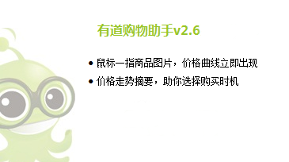

实习答辩
肖 雄
内容纲要
- 自我介绍
-
有道成长记
项目实战
学而为之
- 收获成长
- 职业规划
- 致谢
自我介绍
- 姓名：肖雄
- 部门：webfront
- 学校：四川师范大学
- 实习开始时间： 2012 年 4 月 12 日
实习 (实战 + 学习) = 收获
项目实战

- 饭饭美食关键词页面导航
- 饭饭美食关键词首页的页面建构
- 好友排行榜的页面建构

学而为之
收获成长
- 团队的合作和沟通
- 加深了对负责任前端的理解
-
基础知识的增强
W3C CSS2 文档的熟悉程度提高
对 ECMA script 的更进一步理解
-
各项专业技能的提高
Shell 脚本的学习使用
git 版本控制的使用
Vim 编辑器的使用
Nodejs 应用的开发
职业规划
成为一名优秀的前端
- 技术需要沉淀：脚踏实地学好基础知识
- 知识需要更新：多读书，为写出优秀的代码而奋斗
- 未来需要打拼：如果优秀没有标准就成为卓越
致谢